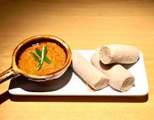

Shiro

Description
Shiro, also called shiro wat, is a stew served for either lunch or dinner, originating from Ethiopia and Eritrea. An essential part of Eritrean and Ethiopian cuisine, its primary ingredient is powdered chickpeas and often prepared with the addition of minced onions, garlic and, depending upon regional variation, ground ginger or chopped tomatoes and chili-peppers. Shiro is served atop injera (leavened flatbread).
Ingredients
- ½ cup oil
- ½ cup chickpea flour
- 2 medium onions pureed
- 1 roma tomato pureed
- 4 cloves of garlic chopped
- 2 tablespoons niter kibbeh Ethiopian spiced clarified butter
- 2 ½ cups of water
- 3 tablespoons berbere spice
- 1 teaspoon garlic powder
- ¼ teaspoon sugar
- Salt
Steps
- Bring a heavy bottom stockpot to medium heat.
- Add pureed onions to the dry pan, and saute until they become dry and start to take on color- about 4-5 minutes.
- Add the oil and berbere spice. Saute for 1-2 minutes until fragrant.
- Then add tomato and chopped garlic. Saute for 2-3 minutes more.
- Now start whisking in about half of the chickpea flour. Gradually start to add about 1 cup of water. Whisk in the remaining chickpea flour and an additional 1 cup of water. Whisk until mixture is very smooth. Add remaining ½ cup of water if you prefer your shiro a little thinner.
- Heat until the shiro begins to pop (simmer). Then add the niter kibbeh, garlic powder, and salt to taste, stirring until combined.
- Simmer for about 5-10 minutes over low heat until the flavors combine and the oil separates slightly from the shiro.
- Serve with fresh injera.